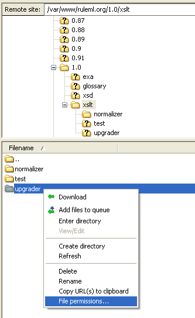

File Permissions in Filezilla
In order for multiple people to work on the same files on the web server, proper permissions must be set by the creator of the file or folder. In Filezilla this is easy to do:

Right click on the file or folder in question, and select file permissions.
Ensure that the group has read and write permissions and depicted in the red box above.
Note that newer versions of Filezilla have the ability to recurse file permissions into subdirectories and files of a folder(note yellow box above). This allows you to set group permissions on all items that you created in the folder. Otherwise, every file must have their permissions set one by one.